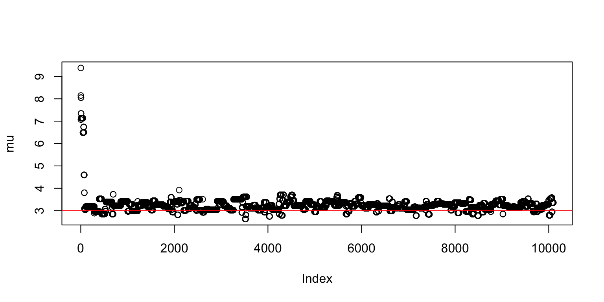
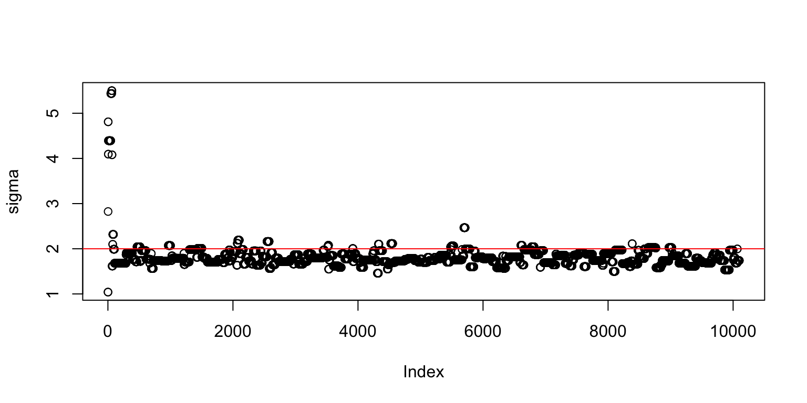

example.RmdSome intro text…
We need the following elements to run drjacoby:
Starting with the data, let’s assume that our data are draws from a normal distribution with a given mean (mu_true) and standard deviation (sigma_true). We will try and estimate these values via MCMC.
# define true (unknown) parameters
mu_true <- 3
sigma_true <- 2
# define data
x <- rnorm(100, mean = mu_true, sd = sigma_true)Our parameters must be defined in dataframe format, and we must specify minimum and maximum values, as well as initial values.
# define parameters dataframe
df_params <- data.frame(name = c("mu", "sigma"),
min = c(-Inf,0),
max = c(Inf,Inf),
init = c(10,1))
print(df_params)
#> name min max init
#> 1 mu -Inf Inf 10
#> 2 sigma 0 Inf 1Next we need a likelihood function. This must have two input arguments: 1) a vector of parameters, 2) a vector of data. It also must return a single value for the likelihood in log space.
# define loglikelihood function
loglike <- function(theta, x) {
sum(dnorm(x, mean = theta[1], sd = theta[2], log = TRUE))
}Finall, we need a prior function. This must take a single vector of parameters as input, and return a single value for the prior probability of those parameters in log space.
Once we have all the elements above, it is straightforward to run the main MCMC. When running the MCMC in R markdown we can use the option pb_markdown = TRUE to avoid progress bars printing at every iteration, but when running in ordinary R this should be omitted.
# run MCMC
mcmc_out <- run_mcmc(data = x,
df_params = df_params,
loglike = loglike,
logprior = logprior,
burnin = 1e2,
samples = 1e4,
chains = 1,
pb_markdown = TRUE)
#> running MCMC
#> Burn-in phase
#>
|
|=================================================================| 100%
#> Sampling phase
#>
|
|=================================================================| 100%We can produce simple trace plots of output
# extract posterior parameter draws
theta <- mcmc_out$chain1$theta
mu <- theta[,1]
sigma <- theta[,2]
# produce trace plots
plot(mu)
abline(h = mu_true, col = 2)
